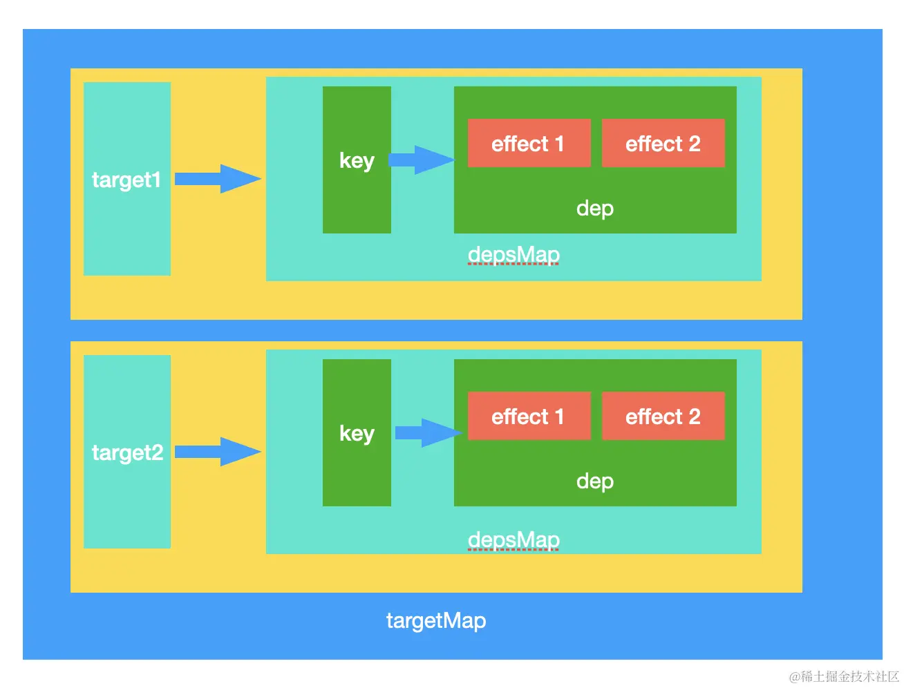

本小节我们开启响应式原理的篇章，在开启这个篇章之前，我们先来了解一下 Vue3 中一个基于 Composition API 响应式应用的例子是如何编写的：
html复制代码<template>
<div>
{{ state.msg }} {{ count }}
</div>
</template>
<script>
import { reactive, ref } from 'vue'
export default {
setup() {
const state = reactive({
msg: 'hello world'
})
const count = ref(0)
const changeMsg = () => {
state.msg = 'world hello'
}
return {
state,
count,
changeMsg,
}
}
}
</script>
此时我们通过 reactive API 或者 ref API 来定义响应式对象。
对于 reactive API 而言，核心是用来定义集合类型的数据，比如：普通对象、数组和 Map、Set。
对于 ref API 而言，可以用来对 string、number、boolean 这些原始类型数据进行响应式定义。
关于二者使用上的更多区别和差异，小伙伴们可以直接参见 Vue 3 官网上《响应式基础》这个章节中的介绍。对于二者的核心实现原理，其实都是依托于 Vue 3 的响应式基础，本小节将以 reactive API 作为切入点，核心分析 Vue 3 的响应式原理。
找到源码中关于 reactive 部分的定义：
js复制代码export function reactive(target: object) {
// 不需要对 readonly 的对象进行响应式
if (isReadonly(target)) {
return target
}
return createReactiveObject(
target,
false,
mutableHandlers,
mutableCollectionHandlers,
reactiveMap
)
}
这个函数核心也就是通过 createReactiveObject 把我们传入的 target 变成响应式的：
js复制代码function createReactiveObject(target, isReadonly, baseHandlers, collectionHandlers, proxyMap) {
// 如果目标不是对象，则直接返回
if (!isObject(target)) {
return target
}
// 已经是一个响应式对象了，也直接返回
if (
target[ReactiveFlags.RAW] &&
!(isReadonly && target[ReactiveFlags.IS_REACTIVE])
) {
return target
}
// proxyMap 中已经存入过 target，直接返回
const existingProxy = proxyMap.get(target)
if (existingProxy) {
return existingProxy
}
// 只有特定类型的值才能被 observe.
const targetType = getTargetType(target)
if (targetType === TargetType.INVALID) {
return target
}
// 通过 proxy 来构造一个响应式对象
const proxy = new Proxy(
target,
targetType === TargetType.COLLECTION ? collectionHandlers : baseHandlers
)
// 缓存 target proxy
proxyMap.set(target, proxy)
return proxy
}
上述整个核心流程就是首先经过一系列判断，判断符合要求的 target 才能被响应式，整理的判断包括了target 的类型、是否是响应式的、是否已经被定义过了，以及是否是符合要求的类型这些步骤，最后执行的是 new Proxy() 这样的一个响应式代理 API。一起来看看这个 API 的实现：
js复制代码 const proxy = new Proxy(
target,
targetType === TargetType.COLLECTION ? collectionHandlers : baseHandlers
)
Proxy 根据 targetType 来确定执行的是 collectionHandlers 还是 baseHandlers。那 targetType 是什么时候确定的呢？可以看一下：
js复制代码const targetType = getTargetType(target)
function getTargetType(value) {
return value[ReactiveFlags.SKIP] || !Object.isExtensible(value)
? TargetType.INVALID
: targetTypeMap(toRawType(value))
}
export const toRawType = (value) => {
// toTypeString 转换成字符串的方式，比如 "[object RawType]"
return toTypeString(value).slice(8, -1)
}
function targetTypeMap(rawType) {
switch (rawType) {
case 'Object':
case 'Array':
return TargetType.COMMON
case 'Map':
case 'Set':
case 'WeakMap':
case 'WeakSet':
return TargetType.COLLECTION
default:
return TargetType.INVALID
}
}
因为 target 传入进来的是一个 Object，所以 toRawType(value) 得到的值是 Object。所以这里的 targetType 的值等于 TargetType.COMMON 也就是执行了 baseHandlers 。而当我们的 reactive(target) 中的 target 是个 WeakMap 或者 WeakSet 时，那么执行的就是 collectionHandlers 了。
接下来看一下 baseHandlers 的实现：
arduino复制代码export const mutableHandlers = {
get,
set,
deleteProperty,
has,
ownKeys
}
这里就是 Proxy 中的定义 handler 的一些属性。
而关于响应式核心的部分就在 set 和 get 中，我们一起来看一下二者的定义实现。
其中 get 的实现：
js复制代码const get = /*#__PURE__*/ createGetter()
可以看到核心其实通过 createGetter 来实现的：
js复制代码function createGetter(isReadonly = false, shallow = false) {
return function get(target: Target, key: string | symbol, receiver: object) {
// 对 ReactiveFlags 的处理部分
if (key === ReactiveFlags.IS_REACTIVE) {
return !isReadonly
} else if (key === ReactiveFlags.IS_READONLY) {
return isReadonly
} else if (key === ReactiveFlags.IS_SHALLOW) {
return shallow
} else if (
key === ReactiveFlags.RAW &&
receiver ===
(isReadonly
? shallow
? shallowReadonlyMap
: readonlyMap
: shallow
? shallowReactiveMap
: reactiveMap
).get(target)
) {
return target
}
const targetIsArray = isArray(target)
if (!isReadonly) {
// 数组的特殊方法处理
if (targetIsArray && hasOwn(arrayInstrumentations, key)) {
return Reflect.get(arrayInstrumentations, key, receiver)
}
// 对象 hasOwnProperty 方法处理
if (key === 'hasOwnProperty') {
return hasOwnProperty
}
}
// 取值
const res = Reflect.get(target, key, receiver)
// Symbol Key 不做依赖收集
if (isSymbol(key) ? builtInSymbols.has(key) : isNonTrackableKeys(key)) {
return res
}
// 进行依赖收集
if (!isReadonly) {
track(target, TrackOpTypes.GET, key)
}
// 如果是浅层响应，那么直接返回，不需要递归了
if (shallow) {
return res
}
if (isRef(res)) {
// 跳过数组、整数 key 的展开
return targetIsArray && isIntegerKey(key) ? res : res.value
}
if (isObject(res)) {
// 如果 isReadonly 是 true，那么直接返回 readonly(res)
// 如果 res 是个对象或者数组类型，则递归执行 reactive 函数把 res 变成响应式
return isReadonly ? readonly(res) : reactive(res)
}
return res
}
}
因为调用 createGetter 时，默认参数 isReadonly = false，所以这里可以先忽略 isReadonly 的部分。整体而言，该函数还是比较通俗易懂的，首先对 key 属于 ReactiveFlags 的部分做了特殊处理，这也是为什么在 createReactiveObject 函数中判断响应式对象是否存在 ReactiveFlags.RAW 属性，如果存在就返回这个响应式对象本身。
然后当我们的 target 是数组，且 key 值存在 arrayInstrumentations 中时，返回 arrayInstrumentations 中对应的 key 值。再来看看 arrayInstrumentations 是个什么：
js复制代码const arrayInstrumentations = createArrayInstrumentations()
function createArrayInstrumentations() {
const instrumentations = {};
(['includes', 'indexOf', 'lastIndexOf']).forEach(key => {
instrumentations[key] = function (this, ...args) {
// toRaw 可以把响应式对象转成原始数据
const arr = toRaw(this)
for (let i = 0, l = this.length; i < l; i++) {
// 对数组的每一项进行依赖收集
track(arr, TrackOpTypes.GET, i + '')
}
// 先尝试用参数本身，可能是响应式数据
const res = arr[key](...args)
if (res === -1 || res === false) {
// 如果失败，再尝试把参数转成原始数据
return arr[key](...args.map(toRaw))
} else {
return res
}
}
})
// instrument length-altering mutation methods to avoid length being tracked
// which leads to infinite loops in some cases (#2137)
;(['push', 'pop', 'shift', 'unshift', 'splice'] as const).forEach(key => {
instrumentations[key] = function (this: unknown[], ...args: unknown[]) {
pauseTracking()
const res = (toRaw(this) as any)[key].apply(this, args)
resetTracking()
return res
}
})
return instrumentations
}
当reactive函数传入数组时，get捕获器会先在arrayInstrumentations对象上查找，如果找不到，再在代理对象target上查找。arrayInstrumentations对象会重写两类函数，一类是查询类函数: includes、 indexOf、 lastIndexOf，代表对数组的读取操作。在这些函数中会执行track函数，对数组上的索引和length属性进行追踪。
一类是修改类函数push、 pop、 shift、 unshift、 splice，代表对数组的修改操作，在这些函数中暂停了全局的追踪功能，防止某些情况下导致死循环。关于这里的一些说明也可以参见 Vue issue。
再回过头看 createGetter 中，接下来的操作就是通过 track(target, TrackOpTypes.GET, key) 进行依赖收集，我们再来一起看一下 track 的实现：
js复制代码// 是否应该收集依赖
let shouldTrack = true
// 当前激活的 effect
let activeEffect
// 存放所有 reactive 传入的 receiver 容器
const targetMap = new WeakMap()
export function track(target, type, key) {
if (shouldTrack && activeEffect) {
let depsMap = targetMap.get(target)
if (!depsMap) {
targetMap.set(target, (depsMap = new Map()))
}
let dep = depsMap.get(key)
if (!dep) {
depsMap.set(key, (dep = createDep()))
}
trackEffects(dep)
}
}
export function trackEffects(
dep,
debuggerEventExtraInfo
) {
// ...
if (shouldTrack) {
// 把 activeEffect 添加到 dep 中
dep.add(activeEffect!)
activeEffect!.deps.push(dep)
}
}
上面函数有点绕，其实核心就是在生成一个数据结构，什么样的数据结构呢？我们来画个图看看：

我们创建了全局的 targetMap ，它的键是 target，值是 depsMap；这个 depsMap 的键是 target 的 key，值是 dep 集合，dep 集合中存储的是依赖的副作用函数 effect。
另外，关于 trackEffects 的实现细节，我们后面的小节再详细介绍。
注意到
Proxy在访问对象属性时才递归执行劫持对象属性，相比Object.defineProperty在定义时就遍历把所有层级的对象设置成响应式而言，在性能上有所提升。
上面说完了 get 的流程，我们了解了依赖收集后的数据结构存储在了 targetMap 中，接下来我们接着看 set 的过程：
js复制代码const set = /*#__PURE__*/ createSetter()
可以看到核心其实通过 createSetter 来实现的：
js复制代码function createSetter(shallow = false) {
return function set(target, key, value, receiver) {
let oldValue = target[key]
// 不是浅层响应式，这里默认是 false
if (!shallow) {
// 不是浅层响应式对象
if (!isShallow(value) && !isReadonly(value)) {
oldValue = toRaw(oldValue)
value = toRaw(value)
}
// ...
} else {
// 在浅模式中，对象被设置为原始值，而不管是否是响应式
}
const hadKey =
isArray(target) && isIntegerKey(key)
? Number(key) < target.length
: hasOwn(target, key)
const result = Reflect.set(target, key, value, receiver)
// 如果目标的原型链也是一个 proxy，通过 Reflect.set 修改原型链上的属性会再次触发 setter，这种情况下就没必要触发两次 trigger 了
if (target === toRaw(receiver)) {
if (!hadKey) {
trigger(target, TriggerOpTypes.ADD, key, value)
} else if (hasChanged(value, oldValue)) {
trigger(target, TriggerOpTypes.SET, key, value, oldValue)
}
}
return result
}
}
可以看到 set 的核心逻辑是先根据是否是浅层响应式来确定原始值和新值，这里默认不是浅层的响应式，所以会先把原始值和新值进行 toRaw 转换，然后通过 Reflect.set 设置值，最后通过 trigger 函数派发通知 ，并依据 key 是否存在于 target 上来确定通知类型是 add（新增） 还是 set（修改）。
接下来核心就是 trigger 的逻辑，是如何实现触发响应的:
js复制代码export function trigger(target,type,key,newValue,oldValue,oldTarget) {
const depsMap = targetMap.get(target)
if (!depsMap) {
return
}
let deps: (Dep | undefined)[] = []
if (type === TriggerOpTypes.CLEAR) {
deps = [...depsMap.values()]
} else if (key === 'length' && isArray(target)) {
depsMap.forEach((dep, key) => {
if (key === 'length' || key >= toNumber(newValue)) {
deps.push(dep)
}
})
} else {
if (key !== void 0) {
deps.push(depsMap.get(key))
}
switch (type) {
case TriggerOpTypes.ADD:
if (!isArray(target)) {
deps.push(depsMap.get(ITERATE_KEY))
if (isMap(target)) {
deps.push(depsMap.get(MAP_KEY_ITERATE_KEY))
}
} else if (isIntegerKey(key)) {
deps.push(depsMap.get('length'))
}
break
case TriggerOpTypes.DELETE:
if (!isArray(target)) {
deps.push(depsMap.get(ITERATE_KEY))
if (isMap(target)) {
deps.push(depsMap.get(MAP_KEY_ITERATE_KEY))
}
}
break
case TriggerOpTypes.SET:
if (isMap(target)) {
deps.push(depsMap.get(ITERATE_KEY))
}
break
}
}
if (deps.length === 1) {
if (deps[0]) {
triggerEffects(deps[0])
}
} else {
const effects: ReactiveEffect[] = []
for (const dep of deps) {
if (dep) {
effects.push(...dep)
}
}
triggerEffects(createDep(effects))
}
}
内容有点多，看起来有点头大，我们来简化一下：
js复制代码export function trigger(target, type, key) {
const dep = targetMap.get(target)
dep.get(key).forEach(effect => effect.run())
}
核心其实就是通过 target 找到 targetMap 中的 dep，再根据 key 来找到所有的副作用函数 effect 遍历执行。副作用函数就是上面 get 收集起来的。
这里有个有意思的地方是对数组的操作监听，我们来看一段代码：
js复制代码const state = reactive([]);
effect(() => {
console.log(`state: ${state[1]}`)
});
// 不会触发 effect
state.push(0);
// 触发 effect
state.push(1);
上面的 demo 中，我们第一次访问了 state[1]， 所以，对 state[1] 进行了依赖收集，而第一次的 state.push(0) 设置的是 state 的第 0 个元素，所以不会触发响应式更新。而第二次的 push 触发了对 state[1] 的更新。这看起来很合理，没啥问题。那么我们再来看另外一个示例：
js复制代码// 响应式数据
const state = reactive([])
// 观测变化
effect(() => console.log('state map: ', state.map(item => item))
state.push(1)
按照常理来说，state.map 由于 state 是个空数组，所以理论上不会对数组的每一项进行访问，所以 state.push(1) 理论上也不会触发 effect。但实际上是会的，为什么呢？我们再来看一下一个 proxy 的 demo：
js复制代码const raw = []
const arr = new Proxy(raw, {
get(target, key) {
console.log('get', key)
return Reflect.get(target, key)
},
set(target, key, value) {
console.log('set', key)
return Reflect.set(target, key, value)
}
})
arr.map(v => v)
可以看到打印的内容如下：
js复制代码get map get length get constructor
可以看到 map 函数的操作，会触发对数组的 length 访问！这就有意思了，当访问数组 length 的时候，我们进行了对 state 的依赖收集，而数组的 push 操作也会改变 length 的长度，如果我们对 length 做监听，那么此时便会触发 effect！而 Vue 也是这么做的，也就是这段代码：
js复制代码deps.push(depsMap.get('length'))
同理，对于 for in, forEach, map ... 都会触发 length 的依赖收集，从而 pop, push, shift... 等等操作都会触发响应式更新！
另外，除了数组，对象的 Object.keys , for ... of ... 等等对象遍历操作都会触发响应式的依赖收集，这是因为 Vue 在定义 Proxy 的时候，定义了 ownKeys 这个函数：
js复制代码function ownKeys(target) {
track(target, TrackOpTypes.ITERATE, isArray(target) ? 'length' : ITERATE_KEY)
return Reflect.ownKeys(target)
}
ownKeys 函数内部执行了 track 进行了对 Object 的 ITERATE_KEY 的依赖收集。而在 setter 的时候，则对 ITERATE_KEY 进行了响应式触发：
js复制代码deps.push(depsMap.get(ITERATE_KEY))
至此，我们讲完了对响应式的依赖收集和触发过程，但有个概览我们没有说清楚，那就是 effect 到底是什么，以及是如何产生的被收集到 dep 当中的。下一节我们将具体介绍。
这里细心的小伙伴，可能会注意到在上面的源码中出现了一个有意思的标识符 /*#__PURE__*/。要说这个东西，那就需要说到和这玩意相关的 Tree-Shaking 副作用了。我们知道 Tree-Shaking 可以删除一些 DC（dead code） 代码。但是对于一些有副作用的函数代码，却是无法进行很好的识别和删除，举个例子：
js复制代码foo()
function foo(obj) {
obj?.a
}
上述代码中，foo 函数本身是没有任何意义的，仅仅是对对象 obj 进行了属性 a 的读取操作，但是 Tree-Shaking 是无法删除该函数的，因为上述的属性读取操作可能会产生副作用，因为 obj 可能是一个响应式对象，我们可能对 obj 定了一个 getter 在 getter 中触发了很多不可预期的操作。
如果我们确认 foo 函数是一个不会有副作用的纯净的函数，那么这个时候 /*#__PURE__*/ 就派上用场了，其作用就是告诉打包器，对于 foo 函数的调用不会产生副作用，你可以放心地对其进行 Tree-Shaking。
另外，值得一提的是，在 Vue 3 源码中，包含了大量的 /*#__PURE__*/ 标识符，可见 Vue 3 对源码体积的控制是多么的用心！